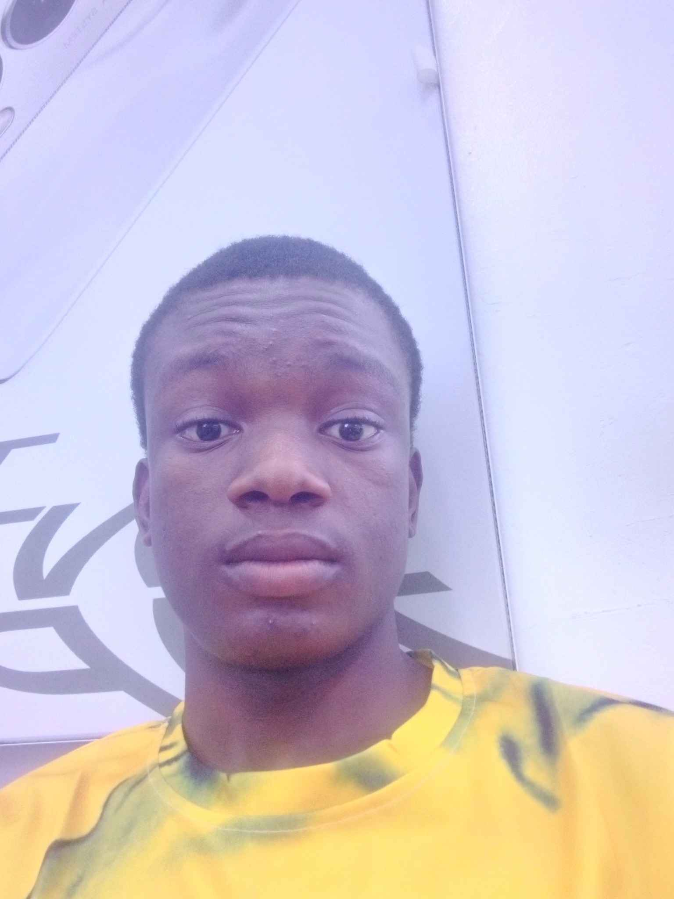

Andrew Godspower | WDD 130
Hello, my name is Andrew Godspower, and I am a dedicated student from Abia State, Nigeria. I have a passion for music and enjoy engaging conversations. Currently, I reside in Lagos with my family, and I am excited to be a part of this program as I develop my skills and pursue personal growth.